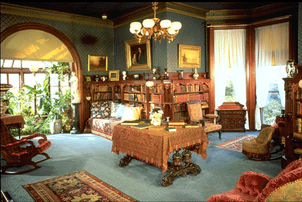

J.R. Burrows & Company:
Salt & Pepper Monochrome Carpet

Library at the Mark Twain Memorial, Hartford, Connecticut. Design:
5000/20, Salt & Pepper Monochrome, c. 1850 - 1900.
Go to Work by J.R. Burrows &
Company
Go to J.R. Burrows & Company Main
Page
 J.R.
Burrows & Company
J.R.
Burrows & Company
P.O. Box 522
Rockland, Massachusetts 02370
E-mail:
merchant@burrows.com
Phone: (800) 347-1795; Phone: (781) 982-1812 Fax: (781) 982-1636
Last updated June 26, 2002